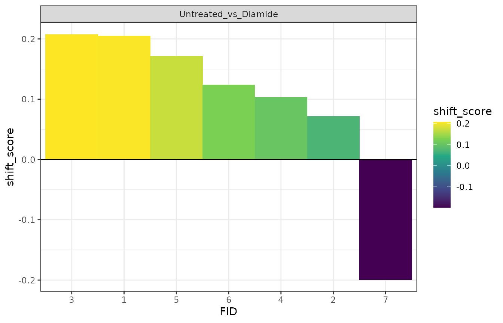
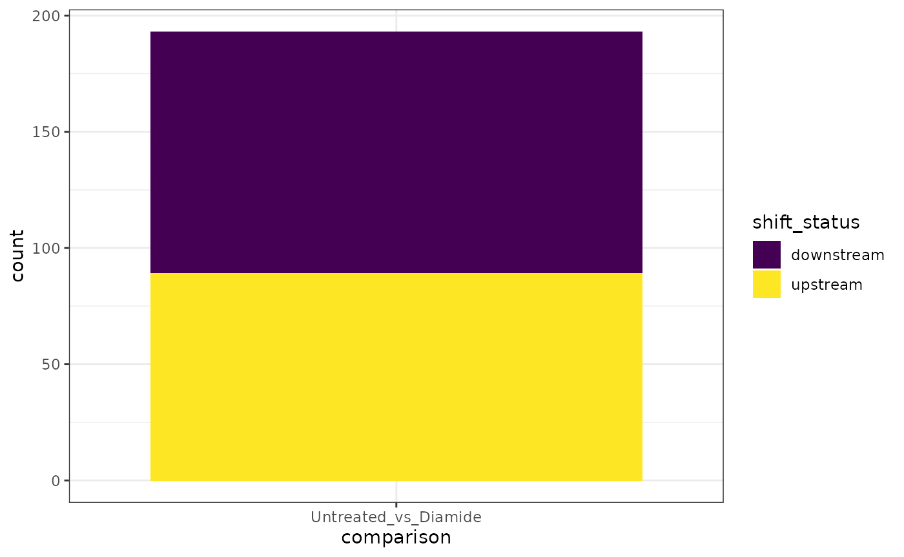
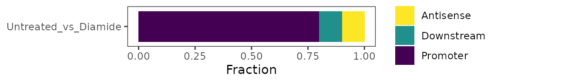

TSS Shifting
FEATURE_SHIFT.RmdNumerous studies have demonstrated that the distribution of TSSs within a given region can shift during development or in response to a given stimulus (Haberle et al. 2014, Zhang et al. 2017, Danks et al. 2018, Ushijima et al. 2018, Lu and Lin 2019). Mathematically speaking, detecting a shift in TSS distribution within a region of interest can be thought of as finding the difference between two discrete probability distributions. To enable detection of TSS shifts, TSRexploreR implements a signed version of earth mover’s distance that we term earth mover’s score (EMS). In essence, we think of the TSS distributions in our two samples to be compared as piles of dirt and ask how much dirt would need to be moved from one pile, how far, and in which direction to recreate the other pile. EMS thus indicates the minimum “cost” of converting one distribution to the other. EMS is between -1 and 1, with larger (or more negative) values indicating larger shifts and the sign indicating direction in accordance with convention for denoting the position of one sequence feature relative to another (negative indicates an upstream shift, positive indicates a downstream shift). EMS is statistically controlled through a permutation test, which produces a p-value and FDR threshold.
Prepare Data
In this vignette, we detect TSS shifts in TSRs identified by STRIPE-seq in control and diamide-treated yeast.
library("TSRexploreR")
library("ggplot2")
# Load example TSSs
data(TSSs)
# Load genome assembly and annotation
annotation <- system.file("extdata", "S288C_Annotation.gtf", package = "TSRexploreR")
assembly <- system.file("extdata", "S288C_Assembly.fasta", package = "TSRexploreR")
# Generate sample sheet
samples <- data.frame(
sample_name=c(sprintf("S288C_D_%s", seq_len(3)), sprintf("S288C_WT_%s", seq_len(3))),
file_1=rep(NA, 6), file_2=rep(NA, 6),
condition=c(rep("Diamide", 3), rep("Untreated", 3))
)
# Create the TSRexploreR object
exp <- TSSs %>%
tsr_explorer(
genome_annotation=annotation, genome_assembly=assembly,
sample_sheet=samples
) %>%
format_counts(data_type = "tss")## Warning in .get_cds_IDX(mcols0$type, mcols0$phase): The "phase" metadata column contains non-NA values for features of type
## stop_codon. This information was ignored.Cluster TSSs and merge replicates
When detecting TSS shifts, it can be useful to combine replicates. Here, we call TSRs for each sample and then merge TSSs and TSRs from replicates of each condition (3 apiece for untreated and diamide).
exp <- tss_clustering(exp, threshold=3, n_samples=1) %>%
merge_samples(data_type = "tss", merge_group="condition") %>%
merge_samples(data_type = "tsr", merge_group="condition")Calculate Shifting
We now calculate shift scores for a set of consensus TSRs. In this approach, merged TSRs from the untreated and diamide-treated conditions are themselves merged if they are within 100 bp of one another and both have at least 10 counts. By default, an FDR threshold of 0.05 is used to select significantly shifted TSRs
Shifting Plots
As an initial assessment of the results, a plot of shift scores for significantly shifted regions can be generated.
plot_shift_rank(exp) +
scale_fill_viridis_c() +
theme_bw() +
geom_hline(yintercept = 0)
A stacked barplot of the number of upstream and downstream shifts can be also generated.
plot_shift_count(exp) +
scale_fill_viridis_d() +
theme_bw()
Annotate Shifts
To facilitate further analysis of the shifted regions, they can be annotated relative to known features.
exp <- annotate_features(exp, data_type="shift", feature_type="transcript")The genomic distribution of shifts can then be plotted.
plot_genomic_distribution(exp, data_type="shift") +
scale_fill_viridis_d(direction=-1)
Gene Tracks
For visual assessment of shift results, signal tracks can be visualized at a region of interest. For reference, annotated shifts are stored in exp@shifting$results$Untreated_vs_Diamide for this example.
gene_tracks(
exp, feature_name="YDR418W",
samples=c(
TSS="Untreated", TSR="Untreated",
TSS="Diamide", TSR="Diamide"
), promoter_only=TRUE,
tss_colors=viridis::viridis(2, end=0.5),
tsr_colors=viridis::viridis(2, end=0.5)
)